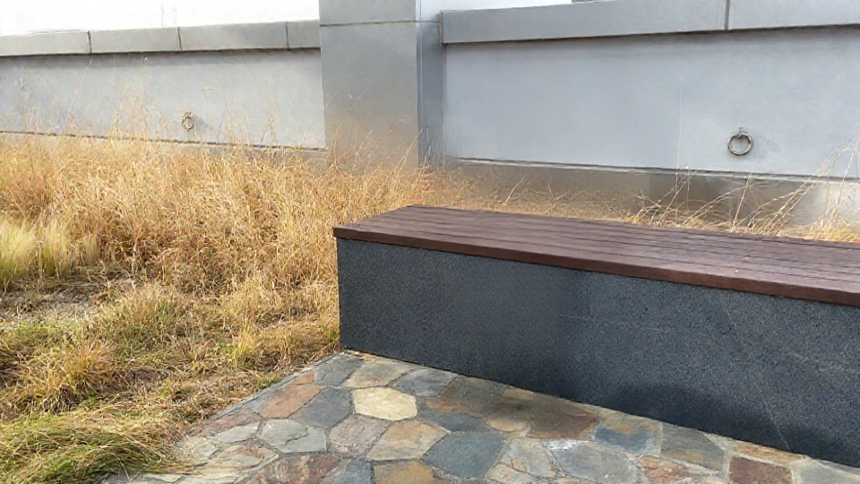
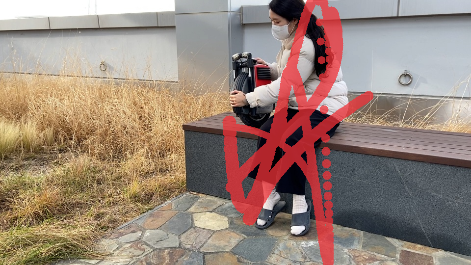
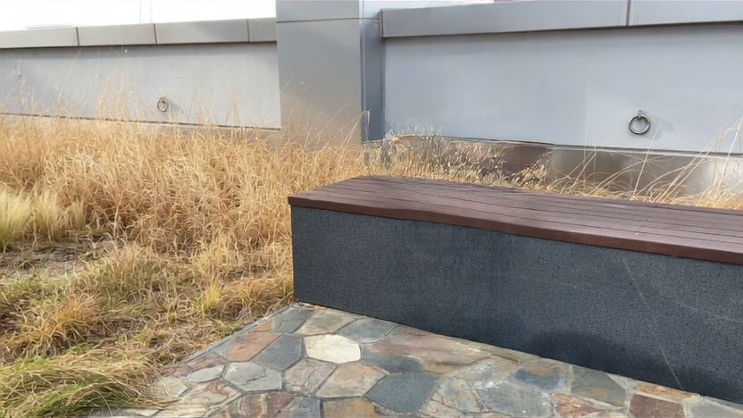
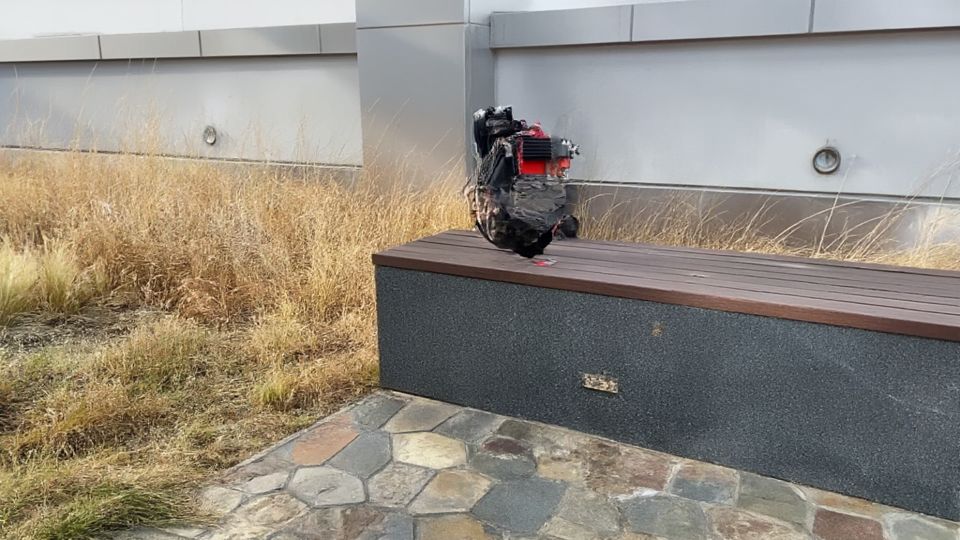
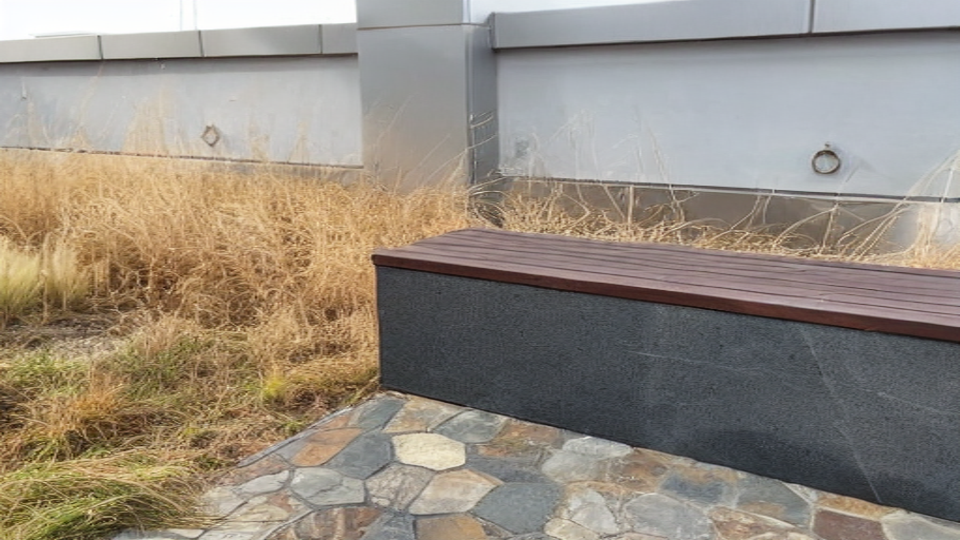
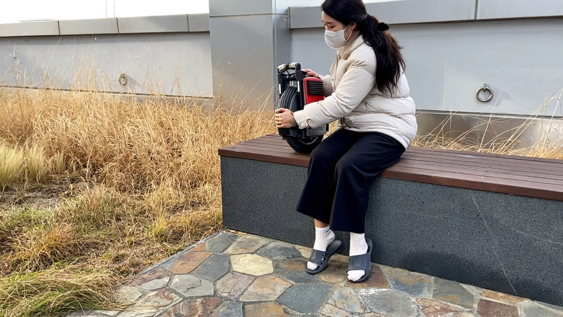

A
Remove the marked object, reconstruct the region naturally, and preserve the remaining scene.






Which two results most completely remove the marked object and its associated effects, with the fewest visible remnants?
Which two results reconstruct the removed region with the most realistic and context-consistent background?
Which two results blend the removed region most seamlessly with its surroundings, with the fewest boundary artifacts?
Which two results best preserve non-target objects and scene details, with the fewest unintended changes?
Which two results provide the best overall object-removal outputs?